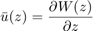

Contents
% Vamos definir constantes LIMITE_SUPERIOR = 2; LIMITE_INFERIOR = -LIMITE_SUPERIOR; INCREMENTOS = 0.01; RHO = 1.2; % Parametros para o escoamento uniforme U_inf = 4; % Parametros para o dipolo MIU = 1; ALFA = 0; % Parametros para o vortice OMEGA = 2*pi*80; % % Vamos fazer o nosso plano x = LIMITE_INFERIOR:INCREMENTOS:LIMITE_SUPERIOR; y = x.'; z = x + 1i*y; theta = matrix_angle(z); r = matrix_abs(z); % Vamos fazer as nossas funções:
W
O nosso W é:
W = exp(1i*(ALFA-theta));
Phi
Esta função é a de potencial de velocidade, podendo ser obtida através da função W da seguinte forma:
No entanto, podemos deduzi-la. Para nosso alívio, não é difícil, ficando com (já posta na forma polar):

Phi = real(W);
hold on contourf(x,y, Phi, -9:1:9); caxis([-9,9]); bar = colorbar; bar.Label.String = 'Elevation (ft in 1000s)'; title("\Phi(z)") contour(x,y, Phi, [0, 0.001], 'black', 'LineWidth', 1); hold off
Psi
Esta função é a de corrente, podendo ser obtida através da função W da seguinte forma:
No entanto, podemos deduzi-la. Para nosso alívio, não é difícil, ficando com (já posta na forma polar):
Psi = imag(W);
hold on contourf(x,y, Psi, linspace(-1,0.25,1)); caxis([-1,1]); colorbar; [c, h] = contour(x,y, Psi, [0, 0.001], 'black', 'LineWidth', 2); title("\Psi(z)") hold off
Velocidade
A função de velocidade, u(z), pode ser obtida através da função W da seguinte forma:

É de notar que não estamos a usar a Simbolic Toolbox do Matlab, pelo que temos nós de calcular a deriva. Para nossa sorte, não é difícil, ficando com (já posta na forma polar):
U = M * N * r.^(N - 1) .* exp(1i * (N - 1) * theta); U_0 = U(ceil(size(U,1)/2), ceil(size(U,2)/2)); U(ceil(size(U,1)/2), ceil(size(U,2)/2)) = 0; V = abs(U); V_max = max(V, [], 'all'); V_min = min(V, [], 'all'); V(ceil(size(V,1)/2), ceil(size(V,2)/2)) = abs(U_0); u = real(U); u_max = max(u, [], 'all'); u_min = min(u, [], 'all'); u(ceil(size(u,1)/2), ceil(size(u,2)/2)) = real(U_0); v = -imag(U); v_max = max(v, [], 'all'); v_min = min(v, [], 'all'); v(ceil(size(v,1)/2), ceil(size(v,2)/2)) = -imag(U_0);
Unrecognized function or variable 'M'. Error in LAB2_Artur (line 90) U = M * N * r.^(N - 1) .* exp(1i * (N - 1) * theta);
contourf(x,y, V, 1:1:10); caxis([0,10]); colorbar; hold on contour(x,y, Psi, [0, 0.001], 'black', 'LineWidth', 2); scatter(0,0, 'black', 'filled') hold off
contourf(x,y, u, -10:10); colorbar; hold on contour(x,y, Psi, [0, 0.001], 'black', 'LineWidth', 2); hold off
contourf(x,y, v, -10:10); colorbar; hold on contour(x,y, Psi, [0, 0.001], 'black', 'LineWidth', 2); hold off
Pressão
pe = 10; P = pe - 1/2*RHO*V.^2; contourf(x,y, P, -10:10); colorbar; hold on contour(x,y, Psi, [0, 0.001], 'black', 'LineWidth', 2); hold off